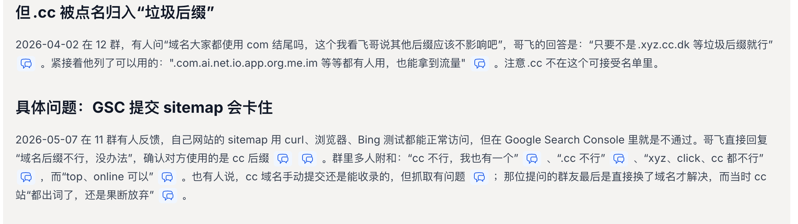
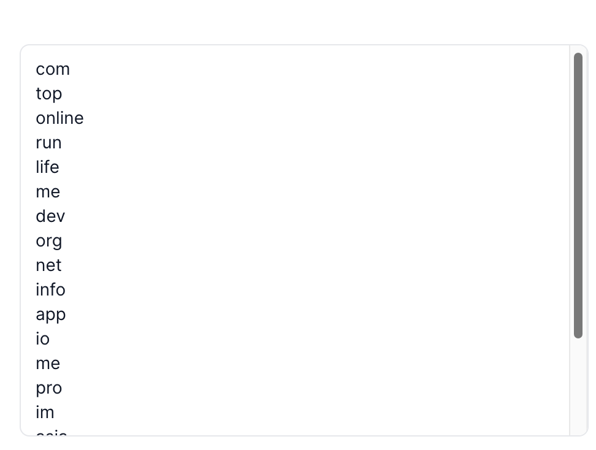

我上了 20 多个视频模板站几乎没收益，复盘下来：.cc 域名是个大坑
做新词新站的人，最爱干一件事：便宜域名一口气囤一批，站先上了再说。
我这边视频模板站，有一批就踩在 .cc 上。结果很扎心——二十多个站挂上去，几乎没有像样的收益；同时 Google Search Console 里 sitemap 提交、抓取也反复出问题。后来对照哥飞社区里的实践结论，才把「后缀随便挑」这件事彻底纠正过来。
这篇文章把踩坑过程、社区里的硬证据，以及现在怎么选后缀，一次性说清楚。具体站名和完整域名一律不写，只讲后缀与现象。
先把两件事拆开
很多人一听「.cc 不好」，就理解成「Google 算法专门惩罚 .cc」。
更准确的说法是：
- 后缀本身对 SEO 的影响通常很小——标题、内容、外链、产品本身，权重远高于后缀字母；
- 但某些便宜后缀在实操里会被点名避开——不是玄学，而是 GSC sitemap / 抓取、外链兼容、垃圾站密度 这类可复现问题。
所以：.cc ≠ 一定被算法封杀；.cc ≈ 新站抢速度时不该赌的那一类后缀。
哥飞社区对后缀的总体判断
2023 年前后群里就有过讨论：后缀关系不大。到了 2026-10-15 那篇数据文，观点被量化了：2025.05–2026.08 共 14 届新词新站月赛前 20 名、278 个网站、37 种后缀——「后缀的影响微乎其微，还不如好好写好网页标题」；前 20 名里 .com、.org、.net、.app、.ai、.io 这 6 个主流后缀合计约占 77%。
优先级很清楚：
有
.com就用.com；没有就.org/.net/.app；别为了抢后缀耽误上站。
但 .cc 被明确点名：归入「垃圾后缀」那一拨
2026-04-02，有人问：是不是大家都用 .com，其他后缀有没有影响？
哥飞的回答很直：
只要不是
.xyz、.cc、.dk等垃圾后缀就行。
紧接着列了可用方向：.com、.ai、.net、.io、.app、.org、.me、.im 等，都有人用、也能拿到流量。
注意：.cc 不在可接受名单里。
社区整理里也常把这段和后面的 GSC 问题放在一起看：

具体坑：GSC 提交 sitemap 会卡住
这是我自己感触最深的一层，也和群里多次踩坑高度重合。
2026-05-07，有人反馈：sitemap 用 curl、浏览器、Bing 都能正常打开，唯独 Google Search Console 过不去。哥飞直接回：
域名后缀不行，没办法。
对方确认用的就是 .cc。群里多人附和：「cc 不行，我也有一个」「xyz、click、cc 都不行」；也有人说手动提交偶尔能收首页，但抓取仍别扭。有人站都已经「出词」了，还是果断换域名。
我这边视频模板站批量用 .cc 时，表现高度类似：
- 站能打开、内容也做了；
- GSC 侧 sitemap / 抓取反复不顺；
- 二十多个站堆上去，几乎看不到像样收益。
当然，没收益不可能只怪后缀——产品、关键词、外链、页面质量都要背锅。但当「内容与提交动作都做了，GSC 却像堵墙」时，.cc 会把问题放大成系统性卡点，特别耽误新词站抢收录窗口。
还有一层：外链与老系统兼容性
2026-06-28 的经验帖提到：代提交外链时，很多老旧博客 / 论坛 / BBS 不认新兴后缀——.com、.net 能正常解析成 <a>，而 .ai、.gg、.app、.video 一类经常解析失败（系统没升级）。
.cc 属于同一类风险：你以为铺了外链，对方系统可能根本没给你链出去。对靠外链启动的站，这是隐性损耗。
别把 .online / .top 当「安全平替」
之前有人把 .online、.top 说成「可以」，出处其实是群友个人经验，不是哥飞结论。
同一篇 2026-10-15 数据文里，哥飞写明要避开太便宜的后缀：.xyz、.top、.online、.site（同类语境里 .shop 也常被点到）——垃圾站用得多，优化更难。
.click 更有实锤：2025-06 就有人强烈避雷——练手站 GSC sitemap 无法抓取、Bing 也难交内页；2026-05 讨论里又有人总结「xyz、click、cc 都不行」。
省几块钱后缀费，换来收录窗口丢掉几天，对新词站往往更贵。
我自己的复盘结论（视频模板站）
结合亲身批次 + 社区证据，我现在的纪律是：
| 场景 | 建议 |
|---|---|
| 新站选域名 | 直接跳过 .cc；优先 .com / .org / .net / .app / .ai / .io |
| 已经出词的老 .cc | 可以继续跑数据，但别再加仓同后缀；卡 GSC 就评估迁域名成本 |
| 批量视频模板 / 新词站 | 后缀统一走主流；批量上站时后缀选错 = 批量踩同一坑 |
| 图便宜 | .app 常比 .com 友好；.me 群里也有人说能用。别为了再省一点滑向 .cc / .xyz / .click / .online |
四五十块买 .com，在 2026 年并不算贵；真要比价可以用 namebeta.com、query.domains 等，Spaceship / Namecheap 也常被提到——但那是另一篇文章的事。后缀选错，比价再狠也救不了 GSC。
选域名时：用 query.domains 一次看清可注册后缀
图便宜乱买 .cc 之前，先把候选词丢进 query.domains：可以一次性查看各后缀是否还能注册，以及常见后缀列表（.com、.app、.io、.me、.org、.net 等），比开十几家注册商挨个搜省事。

避开 .cc / .xyz / .click 这类高风险后缀时，用这个工具先把「还能注册什么」扫一遍，再决定下单哪家平台。
一句话总结
- 后缀不是 SEO 的决定因素，但
.cc在哥飞社区实践里被明确点名避开。 - 高频实操问题是：GSC sitemap / 抓取卡住，外链老系统也不友好。
- 我这边 20+ 个视频模板站几乎没收益，复盘里
.cc是重要原因之一（不是唯一原因）。 - 新站别赌 .cc；已经出词的再看数据决定迁不迁。
如果你也在批量上站，先检查后缀有没有掉进 .cc / .xyz / .click / .online 这类名单——站可以再做一个，收录窗口错过了就回不来。
参考
- 域名后缀怎么选？14 届比赛前 20 名的数据告诉你
- 外链经验：尽量不要注册个性域名后缀
- 哥飞社区群聊实践整理（2026-04-02 / 2026-05-07 等关于垃圾后缀与 GSC 的讨论）